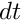
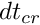
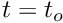
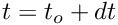

|
Oxidation multiphysics framework 1.1
|
The oxidation multiphysics framework is a simulation system designed to model oxidation of silicon carbide at elevated temperatures that also incorporates viscoelastic creep. The framework uses the finite element method to solve both a diffusion/oxidation problem and the mechanics problem. The expansion that occurs when silicon carbide is transformed into oxide is taken into account when computing the mechanical deformation. The computed stresses then drive viscoselastic creep.
Once the source code is downloaded and the required external packages are installed, navigate to the top directory and run 'make examples'. This will compile the libraries (in ./lib) and two executables (in ./bin): generic and 1D. These two programs illustrate the two different methods of interacting with the framework. The generic executable reads from an input file and 1D is an example geometry which calls the framework via the API. Further instructions on running the solver in either mode are below.
The licenses for Triangle and tinyXML-2 are respected with this work. Limited modifications have been made to the source files and they are supplied with the rest of the source code for the framework. NEED TO FIGURE THIS OUT
There are two different ways to use the simulation framework: with stand alone input file that fully defines the problem or by calling it directly in your own C++ code. The second method preovides some more specific options but is more complicated. The two methods are described below after an explanation of commonalities between the two methods and how the simulation runs.
No matter the way the solver is called, the problems are required to have a lot of the same features. Notably, at a minimum, there must be two material domains: oxide and some reacting material (i.e. silicon carbide). These two material domains must be joined along a single, continuous boundary. This reaction boundary between the oxide and reacting material must begin and end on the outer boundary of the full domain. Where the reaction boundary intersects the outer bounds, mechanical constraints must be applied. In fact, all exterior edges must have some combination of boundary conditions applied. For example in the case of a flat oxide film on a flat silicon carbide surface where growth is only in one direction, a concentration boundary condition must be applied to the continuous edge of the oxide that does not overlap or intersect the silicon carbide and displacement boundary conditions must be applied to the other edges. The displacement boundary conditions on the edges where the oxide and reacting material meet must be those that keep that edge straight. In other words, the oxide must not be allowed to expand past the edge of the reacting material.
After the geometry is defined, an elevated temperature is applied and the simulation starts. A time stepping numerical scheme is used with the finite element method to solve both for the oxidant concentration profile and mechanical deformation, although at different time scales. Oxidation occurs on a much larger time scale than creep so it helpful to think of the numerical scheme as two separate schemes: one that operates with a time step of  that solves diffusion and oxidation and a second scheme operating with a time step of  that solves for mechanical deformation. The two schemes are nested within each other such that the total time the mechanical deformation scheme is used is the diffusion/oxidation time step ( ). For example, starting from time  time is incremented by and the mechanical deformation found. This is repeated until . At that point, the diffusion and oxidation that has occured over is calculated. The new oxidation leads to an update of the geometry and a new mesh being created. Once information is moved onto this new mesh, the time stepping continues.
The easiest way to run a simulation is to use an xml input file. In this input file, all the simulation parameters, material domains, initial conditions and boundary conditions are defined. An example input file named 'input.xml' can be created in directory <file_dir> by running 'bin/generic -g <file_dir>'. This example problem defines a rectangular silicon carbide domain constrained on three sides and an initially thin oxide layer on the fourth. This geometry can be used to validate the framework against the Deal-Grove model. To run the example file after it is created, run 'bin/generic <file_dir>/input.xml'. Output files will be created in <file_dir> including logs and a series of vtu files with simulation results viewable with ParaView (www.paraview.org).
Most, but not all, of the elements in the example xml input file must be in all xml input files. Each element is described below. If a required part is missing, the solver will warn the user and stop execution. Each section of the xml file is described below. Each element, including the root of the document, must use specific names. The root must be named "InputFile" and the header titles below match to the titles of the elements. Unless otherwise noted, the attributes for each section in the example input file are required.
The Parameters element defines meshing, simulation and output parameters
The Domains element defines the different material domains in the simulated problem. In the example input file, there are two material domains: oxide and SiC. The name of the oxide domain must be 'oxide' while any reacting materials can have arbitrary name. The materials must have the following atributes:
In the special case where a crack is being explicitly modelled, the material domain must be named 'crack'. Unlike oxide or any other materials, E, nu, D, eps and rxn_rate are not needed, only the geometry.
The BoundaryConditions section lists the concentration and mechanical boundary conditions applied. Regardless of the type of boundary condition, each requires attributes of intial_value and rate leading to an instantaneous value of the boundary condition of initial_value + rate * time. Each boundary condition must also include a listing of points that define the boundary where the condition is applied. Currently, all points along the exterior of the the domains must have at least one boundary condition. The allowable constraint types are:
The Temperature section defines the temperature function to use. Currently the child xml element must be named 'constant' with attributes of initial_temperature and cooling_rate. These values are read in such that the temperature function used is Temperature = initial_temperature - cooling_rate * time.
The InitialStrain section defines the intial strain condition in the oxide. There are two types of strains: creep and mesh each with x, y, and xy components. The creep strain is that due to creep and the mesh strain is the deformation stored in the geometry itself. The example values provide a stress free oxide at time t = 0. This section is optional.
The second method of using the framework is through a C++ API. Interacting with the framework this way provides more flexibility, notably with the temperature as a function of time and the initial strain conditions. With an xml input file, the tempature must be linearly related to time while using the API allows the use of an arbitrary function of time. For example, this allows cyclical cooling. Likewise, with the xml input file the initial strain condition must be constants and the same throughout the oxide domain. If the framework is used via the API, more complex functions can be used. Otherwise, the two methods are identical. With the API, the same data that is in the xml input file must be defined. An example file is located in the geometry directory named 1D which defines the same problem that the xml input file defines. See that source file for more information.